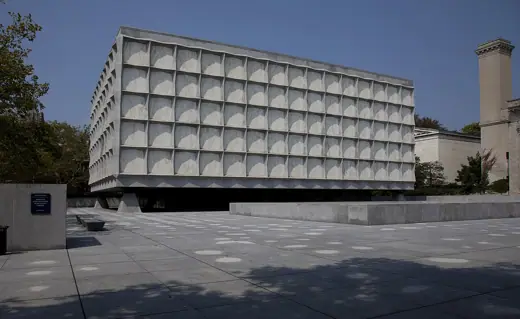
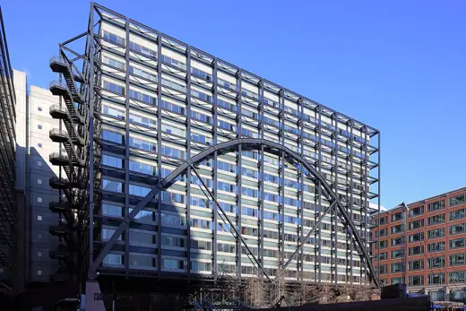
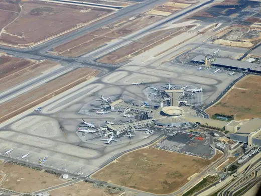
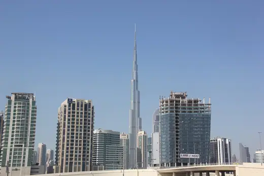
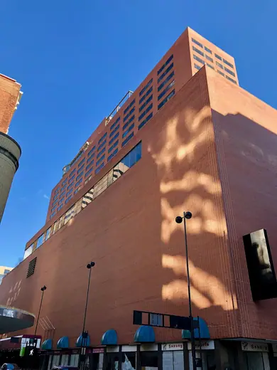
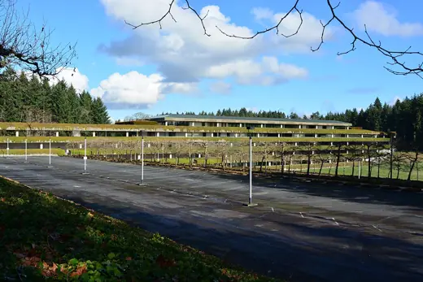
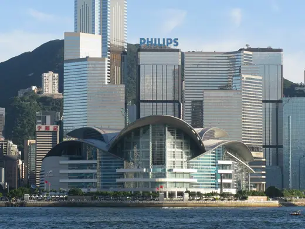
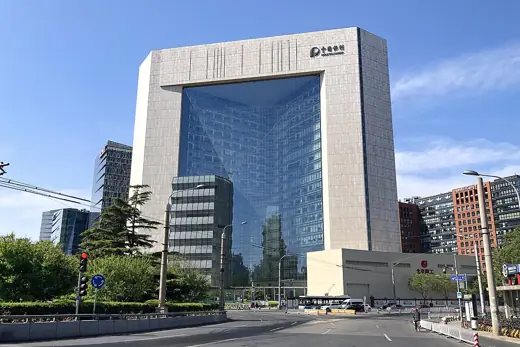

SOM buildings 18
Sort
 James A. Farley Building (Moynihan Train Hall)1914 · New York City
James A. Farley Building (Moynihan Train Hall)1914 · New York City Lever House1952 · New York
Lever House1952 · New York
Beinecke Rare Book & Manuscript Library1963 · New Haven Hajj Terminal, King Abdulaziz International Airport1981 · Jeddah
Hajj Terminal, King Abdulaziz International Airport1981 · Jeddah
Exchange House, Broadgate1990 · London
Ben Gurion Airport Terminal 32004 · Lod
Burj Khalifa2010 · Dubai Pearl River Tower2011 · Guangzhou
Pearl River Tower2011 · Guangzhou Chhatrapati Shivaji Maharaj International Airport Terminal 22014 · Mumbai
Chhatrapati Shivaji Maharaj International Airport Terminal 22014 · Mumbai Kempegowda International Airport Terminal 22022 · Bengaluru
Kempegowda International Airport Terminal 22022 · Bengaluru
Terrace Plaza Hotel1948 · Cincinnati Hilton Istanbul1955 · Istanbul
Hilton Istanbul1955 · Istanbul
Weyerhaeuser Corporate Headquarters1971 · Federal Way
Hong Kong Convention and Exhibition Centre1988 · Hong Kong Jin Mao Tower1999 · Shanghai
Jin Mao Tower1999 · Shanghai
New Beijing Poly Plaza2007 · Beijing Al Hamra Tower2011 · Kuwait City
Al Hamra Tower2011 · Kuwait City Cayan Tower2013 · Dubai
Cayan Tower2013 · Dubai